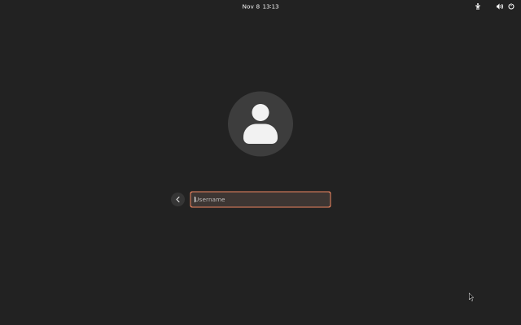
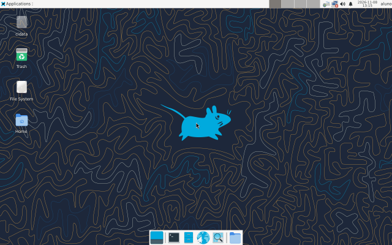
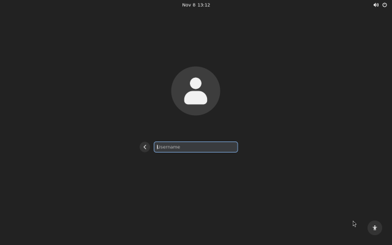
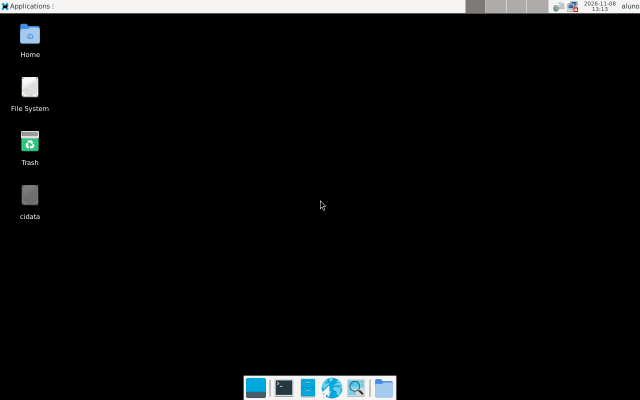
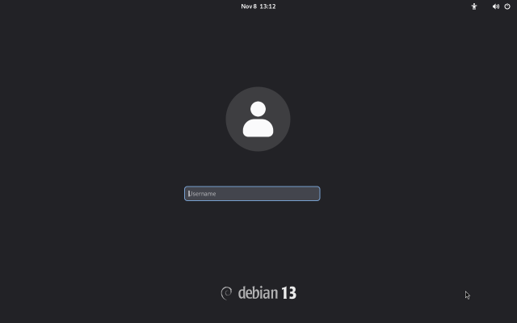
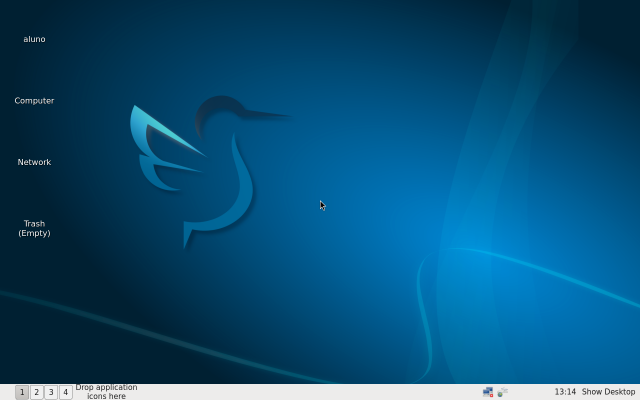
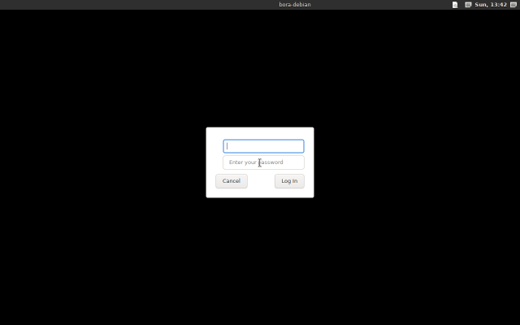
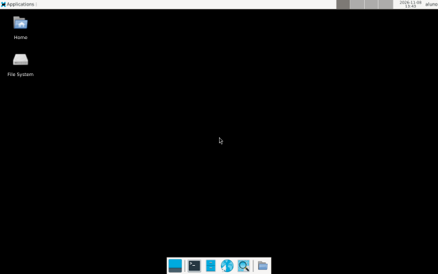

Xfce ou LXQt?
O Xfce é o mais completo dos leves, com o jeito de sempre: menu, barra de tarefas e ícones na área de trabalho. É o padrão. O LXQt gasta ainda menos, e é a escolha para 2 GB de memória ou menos.
Instala o Xfce ou o LXQt ao lado do ambiente que você já tem, para escolher na tela de login.
desktop/ambiente-leve
Risco baixo
Pede a senha de administrador
Testada em máquina virtual no Ubuntu e no Debian
Em resumo
entrar_no_leve, para cada pessoa do computador.Passo a passo
As mesmas quatro etapas de toda receita, com o que esta confere em cada uma.
Confere se cada pacote do ambiente escolhido está instalado e, com entrar_no_leve, se cada pessoa já entra nele por padrão. Se estiver tudo certo, pula a receita.
--no-install-recommends.entrar_no_leve, grava a sessão de cada pessoa em /var/lib/AccountsService/users, guardando antes uma cópia.Confere os pacotes, o arquivo que põe o ambiente na tela de login (/usr/share/xsessions/xfce.desktop ou lxqt.desktop), o programa que abre a sessão e o Xorg e, com entrar_no_leve, a sessão gravada de cada pessoa.
Volta os arquivos do AccountsService ao que eram e remove os pacotes que a receita instalou, com as dependências que vieram junto. Se alguém estiver dentro do ambiente leve, para antes de mudar qualquer coisa.
No terminal
A saída de um teste no Ubuntu 26.04, com o Xfce e entrar_no_leve: sim, encurtada nas linhas do apt.
Os porquês
O Xfce é o mais completo dos leves, com o jeito de sempre: menu, barra de tarefas e ícones na área de trabalho. É o padrão. O LXQt gasta ainda menos, e é a escolha para 2 GB de memória ou menos.
Para testar sem perder nada. Se não gostar, escolha o antigo na tela de login. Os seus arquivos e programas são os mesmos nos dois.
Junto com o Xfce, o apt recomenda outra tela de login, o LightDM, que trocaria a que você já tem e mudaria o jeito de entrar no computador. Também viriam programas que pesam. A receita escolhe à mão o que faz falta.
O Xfce e o LXQt rodam no Xorg, que é o que funciona melhor com placas de vídeo antigas. Se o computador veio só com Wayland, a receita instala o Xorg junto.
Como
entrar_no_leve: a sessão que abre por padrão. O GDM e o LightDM leem daqui.Parâmetros
| Parâmetro | Padrão | O que é |
|---|---|---|
ambiente | xfce | Qual ambiente leve você quer?
|
entrar_no_leve | não | Passar a entrar no ambiente leve por padrão? Com não, ele só aparece como opção na tela de login. |
No menu, o bora pergunta o que precisa. Num script ou num agente, passe os parâmetros na linha de comando:bora plano --receitas desktop/ambiente-leve -p desktop/ambiente-leve.ambiente=lxqt
Confira você mesmo
ls /usr/share/xsessionsLista as sessões que aparecem na tela de login.sudo cat /var/lib/AccountsService/users/$USERMostra a sessão que abre por padrão para você.free -hAbra no ambiente antigo e no leve, com os mesmos programas, e compare a memória usada.Onde funciona
| Distro | Onde | Data | Resultado |
|---|---|---|---|
| Ubuntu 26.04 | Contêiner (teste automático) | 06/11/2026 | Passou |
| Ubuntu 24.04 | Contêiner (teste automático) | 06/11/2026 | Passou |
| Debian 13 | Contêiner (teste automático) | 06/11/2026 | Passou |
| Debian 13 | Máquina virtual | 08/11/2026 | Passou |
| Ubuntu 24.04 | Máquina virtual | 08/11/2026 | Passou |
| Ubuntu 26.04 | Máquina virtual | 08/11/2026 | Passou |
Testada em contêiner quer dizer que a receita passou nos testes automáticos dessa família, que rodam num contêiner a cada pull request, sem kernel, disco nem tela de login de verdade. Testada em VM quer dizer que, além disso, ela foi aplicada, conferida e desfeita numa máquina virtual (VM) de verdade, o que o CI faz toda semana; o registro acima mostra a última vez de cada distro. Enquanto uma receita só tem o teste em contêiner, o bora avisa quando monta o plano. Testar numa máquina sua é uma das ajudas mais valiosas.








Capturas de verdade do teste automático com tela, que roda toda semana. Elas são trocadas quando o registro de testes muda, no máximo uma vez por mês.
Onde ela entra
Fontes
Bora melhorar
Os pedidos viram issues no GitHub, onde qualquer pessoa pode comentar, votar com um 👍 ou se oferecer para fazer.
Uma opção nova, um comportamento diferente ou algo que esta receita ainda não faz.
Fazer um pedidoUsa Fedora, Arch ou outra família? Diga qual, e conte se puder testar.
Pedir outra distroUma mudança que o bora ainda não sabe fazer, dentro deste rolê ou fora dele.
Pedir uma receitaAlgo não funcionou como esta página diz? O formulário já vem com o roteiro.
RelatarFicou confuso? Sugira um jeito melhor de dizer, direto no arquivo.
Ver no GitHub